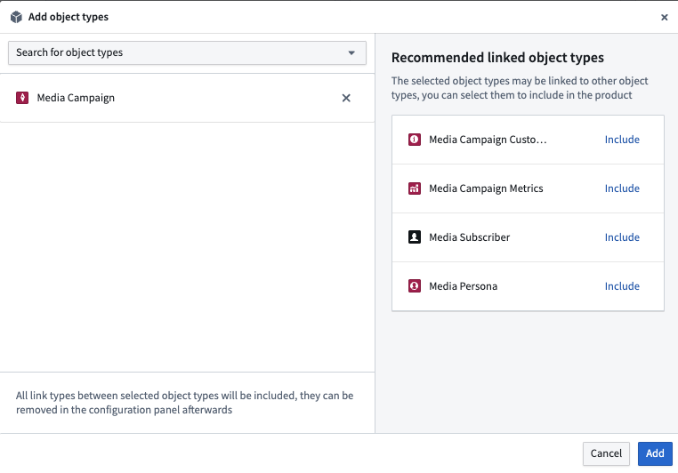
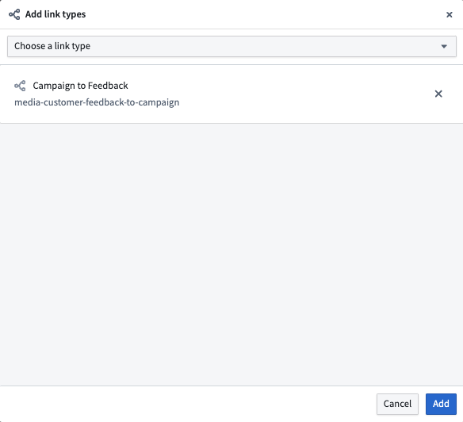
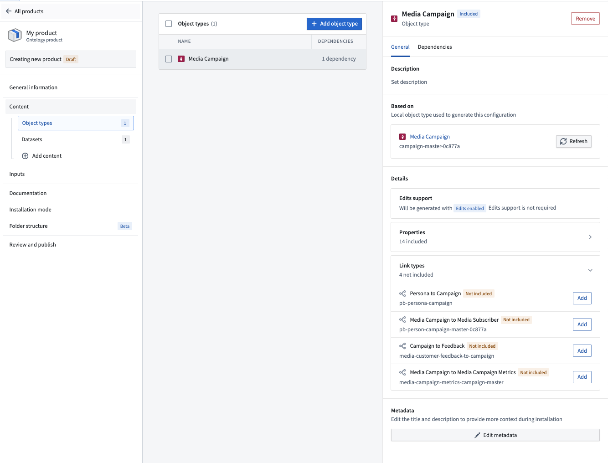
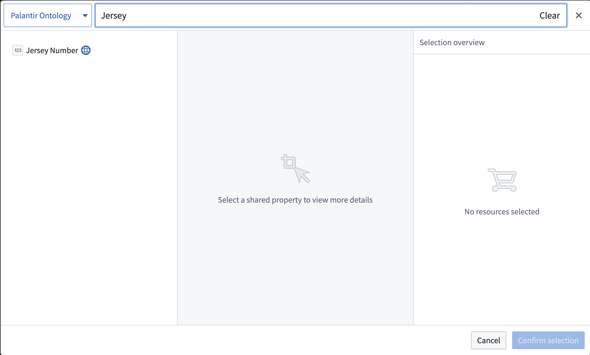
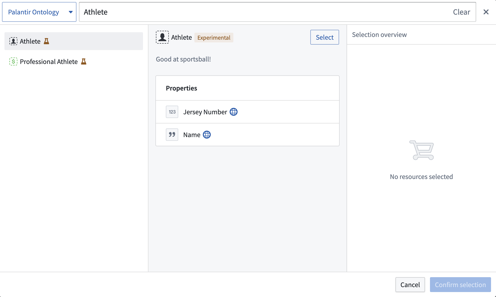

Use Foundry DevOps to include your object and link types in Marketplace products for other users to install and reuse. Learn how to create your first product.
Most object property types are supported in Marketplace products, but the following are not yet available:
Marketplace products do not yet support the following:
Note that objects themselves cannot be packaged with Marketplace. This means that, for example, object edits made by Actions cannot be packaged into a Marketplace product. However, datasets and object types can be packaged in order to create new objects after installation of a Marketplace product.
Object types without backing datasources are supported in Marketplace products.
If you require support for any of the unsupported features above, contact Palantir Support.
To add an object type to a product, first create a product. Add outputs and then select the Add ontology entities option.
You will then be prompted to choose an object type. After selecting an object type, you will see recommendations for linked object types that you may want to add to your product.

To add a link type to a product, first create a product and then select the Link type content type.
You will then be prompted to choose a link type as below.

While you can select link types directly, we recommend first adding your object types and then selecting relevant links via the information panel as below.

To add a shared property type to a product, first create a product. Then, select the Shared property content type as shown below.
You will then be prompted to choose a shared property.

To add an interface type to a product, first create a product. Then, select the Interface content type as shown below.
You will then be prompted to choose an interface.
